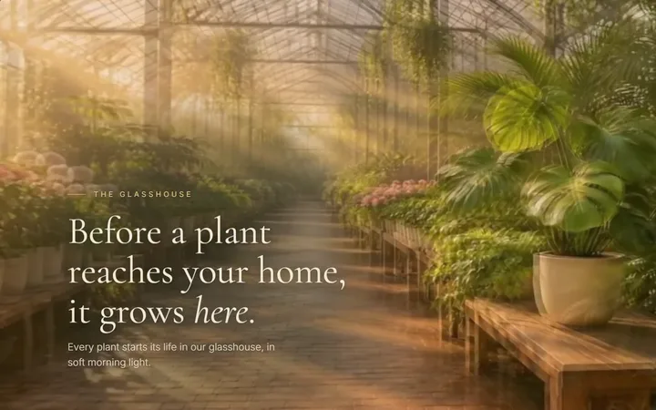
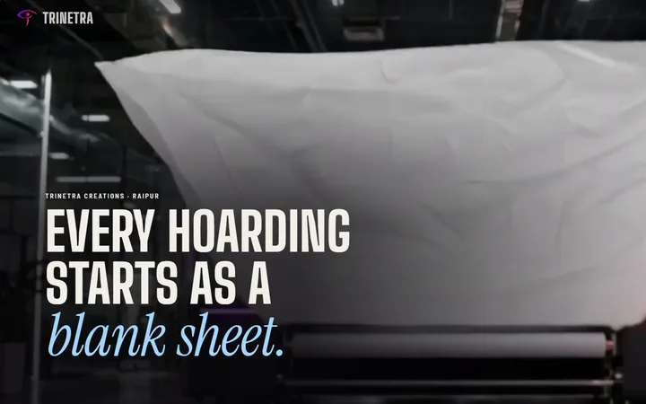

Dermatology clinic Concept
DERMAÉ
A premium clinic that needed to feel luxurious and trustworthy, so people feel safe booking: a soft palette and a scroll film that moves like a luxury advert.
View case study: DERMAÉWhat I can build
From the first idea to launch day I design and build the whole thing, so your website looks like your brand and works like your best salesperson.
Layer 01 / 05 · Film
Scroll films and motion that make a brand feel big.
Layer 02 / 05 · Interaction
3D product views, sliders and effects visitors can play with.

Layer 03 / 05 · Layout
Layouts that guide visitors to book, buy or call.

Layer 04 / 05 · Commerce
Ordering, enquiry and WhatsApp flows that hold together.

Layer 05 / 05 · Code
SEO and speed, so customers find you and stay.

All of this. One website.
Film, interaction, layout, commerce and code, designed and built together by one person.
Selected work
Two concepts and a pitch demo, each one fully built. They show what a business like yours could have, and each is labelled honestly.
DERMAÉ
Dermatology clinic Concept
A premium clinic that feels luxurious and trustworthy, so people feel safe booking.

The King's Garden Plant nursery Pitch demo An online nursery with a cinematic film and 360° plants you can turn.
Trinetra Signage & branding Concept A scroll film that walks through a real job, from idea to finished hoarding.01 / 03
A simple, open way of working: you always know where we are on the trail, and what comes next.
Step 1 of 5
Your business, your customers, your goals.
I learn your business, your customers, and what makes you different.
Step 2 of 5
How visitors should feel, and what they should do.
I plan how your visitors should feel and what they should do, including the interactions you want.
Step 3 of 5
Every screen designed and coded by me.
I design and code every screen, then test it on real phones and laptops.
Step 4 of 5
We go live, checked and ready.
We go live together, with every page checked before anyone else sees it.
Step 5 of 5
Polished until it feels right.
We look at how it's working and polish the details until it feels right.
About me

I fell in love with code because of what it can show. A few lines can become a view that stops you, like reaching the top of a trail and seeing the whole valley open up below.
I'm Pratul, a web designer and developer. I fell in love with code because of what it can show: a few lines can become a view that stops you, like reaching the top of a trail and seeing the whole valley open up below.
That's how I see websites too. The climb is the hard part: understanding a business, its people, and what makes it different. The view at the top is what its customers get to feel.
One person from first sketch to launch. Nothing lost in hand-offs.
Fast pages and clean SEO, so customers find you and stay.
Based in India, working with businesses anywhere.
The tools I build with, chosen for speed, polish, and sites that stay easy to look after.
Let's build together
Tell me about your business and what you'd like your website to do. I'll get back with a clear plan.
Tell me about your business and what you'd like your website to do. I'll reply within 24 hours.